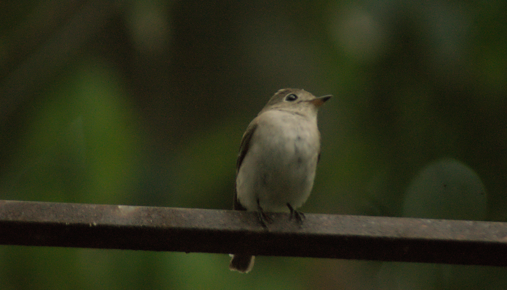

The Asian Brown Flycatcher is a small, plain-looking insectivorous bird with brown upperparts, pale underparts, and a relatively large dark bill. It usually sits quietly on a branch before making short flights to catch insects in the air. It is a common migrant or passage bird in many parts of India and can be found in wooded habitats, gardens, plantations, and forest edges.